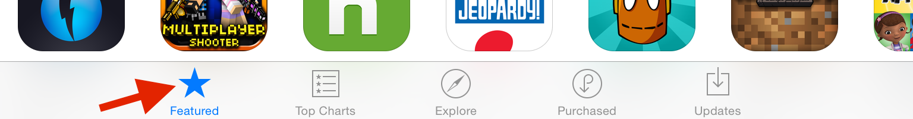

Brainstorm Ideas for Your Final App!
1. Welcome To "Project" 1.5!
2. First IOS Apps By Experienced Developers
3. Let's Build An App!
4. Benefits of logging your progress
Some of you will roll right though this project, and others will really struggle. No matter your situation, it’s a good idea to log your answers to the questions we’ll ask. You could do this by creating text files to capture your responses, or perhaps log them on a blog. Blogger is a great, free, blogging tool you can use to get started.
If you're shy, and don't want to share your work publicly, please do log your answers in a file on your computer, or use the boxes provided in the classroom.
Logging your experience has important benefits:
- Working through the steps will keep you from getting stalled.
- As a cohort you will build up a useful body of information that others can learn from.
- You will have a chance to find other students working on similar challenges, allowing you to collaborate.
When I was an electrical engineering student at UCF, my team kept a blog to log the progress of our Senior Design Project: a rocket with an electronic IMU to track velocity, acceleration, and altitude. Not only did it help our team solidify our learnings, but it's also fun to look back at!
5. Course Map And Mindset
6. Quiz: What Makes A "Good" IOS App?
7. Starting At The Drawing Board
8. Brainstorm Ideas: Personal Motivation
9. Quiz: What Inspires Or Frustrates You?
The Personal Motivation behind Your App Ideas
Sammy’s example served two purposes: he built an app to satisfy one of his interests (reading comics) and overcame a frustration (inability to find a good app to read digital comics).
Personal motivation can really serve you well when developing an app. Like Sammy said, if the app is something you want to use, it's a lot easier to keep wanting to work on it - even when the going gets tough.
So take some time to think about those things that aggravate and inspire you, and jot down ways an app might help. It's a good idea to think on this for a couple days as you go about your routine. After all, you may not think about some frustrations until you experience them.
10. Brainstorm Ideas: Featured Apps
11. Quiz: Ideas From Featured Apps
Browsing Apple's Featured App Store Apps
If you have an iPhone or iPad, you can access the featured apps by selecting the App Store app, and the "Featured" tab at the bottom.

(Note: These apps are relevant to the device you're using: iPhones will show the top apps for iPhone and iPads will show the top apps for iPad.)
If you don't have an iOS device, you can browse the top free and paid apps online here.
Take a minute to browse these apps and see what inspiration strikes. Jot those ideas down, and start thinking about how you might improve upon these apps.
Another approach to this exercise might be to scale down a version of a popular app, so also keep that in mind as you browse through the apps.